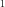

4.1.10. Dabs: dust absorption model¶
This model allows the user to make a zeroth order approximation to the effects of dust on an X-ray absorption spectrum. Basically, compared to absorption by atomic gas, the effects of dust are two-fold:
Modifications to the fine structure near the edge
Reduced opacity due to self-shielding in grains
The dabs model only accounts for the second effect, reduced opacity due to self-shielding. The formalism of Wilms et al. (2000) is followed, and we refer to that paper for a full explanation.
In the set of abundances, we use the depletion factors of Wilms et al. (2000).
H |
He |
Li |
Be |
B |
C |
N |
O |
F |
Ne |
Na |
Mg |
Al |
Si |
P |
0 |
0 |
1 |
0 |
0 |
0.5 |
0 |
0.4 |
0 |
0 |
0.75 |
0.8 |
0.98 |
0.9 |
0.4 |
S |
Cl |
Ar |
K |
Ca |
Sc |
Ti |
V |
Cr |
Mn |
Fe |
Co |
Ni |
Cu |
Zn |
0.4 |
0.5 |
0 |
0 |
0.997 |
0 |
0.998 |
0 |
0.97 |
0.93 |
0.7 |
0.95 |
0.96 |
0 |
0 |
The numbers represent the fraction of the atoms that are bound in dust grains. Noble gases like Ne and Ar are chemically inert hence are generally not bound in dust grains, but other elements like Ca exist predominantly in dust grains.
Warning
For a realistic model, it is advised to combine the dabs model with a hot model, where (for Solar abundances), the hot model should contain the elements not bound in the dust.
Note
Finally, we note that the amol model can deal with the modified structure near the oxygen edge, but that model does not take self-shielding into account.
The parameters of the model are:
- nh:
Nominal hydrogen column density in

 . Default value:
. Default value: 
.- amin:
Minimum grain size in
 m. Default value: 0.025.
m. Default value: 0.025.- amax:
Minimum grain size in
m. Default value: 0.25.- p:
Power index grain size distribution. Default value: 3.5.
- rho:
Mean density of the grains in units of 1000 kg
 . Default value: 3.
. Default value: 3.- ref:
Reference atom. Default value: 3 (Lithium). because dust, according to the depletion factors used, does not contain hydrogen, we substitute here formally Lithium. The user is advisednot to change this.
- 01…30:
Abundances of H to Zn. See the remark on depletion factors above.
The following parameters are common to all our absorption models:
- icov:
Type of the covering fraction. Default value: 2 (constant, set by fcov). If icov=1, full covering is applied. If icov=3, covering fraction follows a tangent function that increases with energy. If icov=4, covering fraction follows an inverse tangent function that decreases with energy. See description in
pion.- fcov:
The covering factor of the absorber if icov=2. Default value: 1 (full covering). If icov=3 or 4, it sets the covering factor at the high energy end.
- lcov:
The covering factor of the absorber at the low energy end. Default value: 1. lcov is applied only when icov=3 or 4. See description in
pion.- ecov:
The energy when the covering factor changes from lcov to fcov. Only applied if icov=3 or 4.
- acov:
The width of the transit on covering factor. Only applied if icov=3 or 4.
- zv:
Average systematic velocity
 of the absorber (using relativistic Doppler shift)
of the absorber (using relativistic Doppler shift)
Recommended citation: Wilms et al. (2000) and Kaastra et al. (2009).